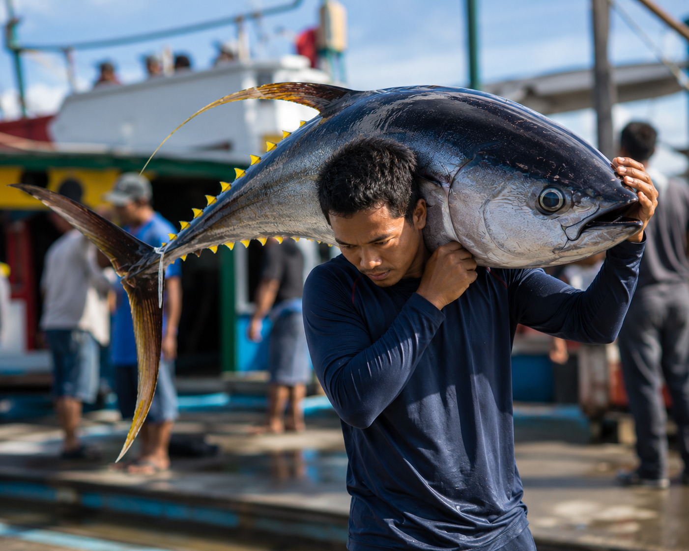

Things To Do in GenSan
Best Time to Visit
5:00 AM - 7:00 AM
Location
General Santos City Fish Port Complex, Tambler, Gen. Santos City
Fish Port Complex
See GenSan's tuna industry in action. Watch large tuna being unloaded, weighed, graded, and prepared for local markets or export.
Tuna Capital
What to Expect
The Fish Port Complex is the heart of GenSan's tuna industry. Every morning, fresh tuna caught from the seas are unloaded, weighed, graded, and traded locally and for export to countries around the world.
Experience the fast-paced action of one of the Philippines' most important tuna ports and see why GenSan is known as the Tuna Capital.
Suggested Tour Flow
Morning visit route
- ARRIVE EARLYArrive early at the Fish Port Complex.
- REGISTERRegister or request permission at the entrance.
- WEAR BOOTSWear boots or proper foot covering. Prepare a small amount in case boots or coverings are needed.
- PROCEED INSIDEProceed to the tuna unloading area.
- OBSERVE THE TRADEWatch the tuna weighing, grading, and sorting process.
- TAKE PHOTOSTake photos only where allowed.
- ASK LOCALSAsk local workers or guides about tuna export and local trade.
- BREAKFAST STOPEnd the visit with breakfast or coffee near the city proper.
Fish Port visitor information
Best Practice / Reminders
Before you go
- Wear long pants and closed footwear.
- Avoid shorts and sleeveless tops.
- Bring a valid ID.
- Bring socks, because you may need to wear rented boots.
- Do not touch the fish or equipment.
- Stay clear of wet floors, hooks, carts, and workers.
- Ask before taking photos or videos.
- Confirm entry rules before visiting because this is an active port, not a tourist park.
Quick Info
Visit details
- Best Time to Visit
- 5:00 AM - 7:00 AM
- Location
- Tambler, General Santos City
- Contact
- (083) 304 9474
- Type
- Working Port / Industry Experience
- Recommended For
- Travelers, food and culture enthusiasts, students, and photographers

Start your day early and witness the energy behind the Tuna Capital of the Philippines.

Need a Ride?
Call a trusted local taxi to take you to the General Santos Fish Port Complex.
- Reliable
- Safe
- Comfortable
- Advance Booking Available
General Santos City Fish Port Complex
Gensan City Taxi
Reliable Airport & City Taxi Service in General Santos City, Philippines. Safe | On-Time | Comfortable | Advance Booking Available Message us to reserve your ride today.
0935 025 51760 People Reacted
Was this guide helpful?
After your visit